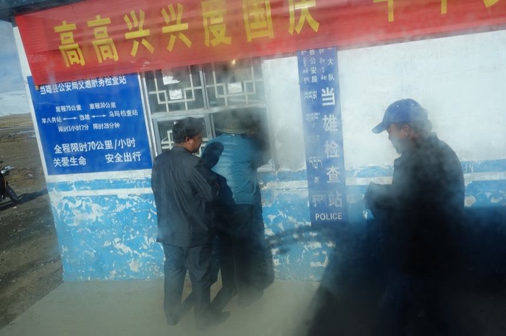
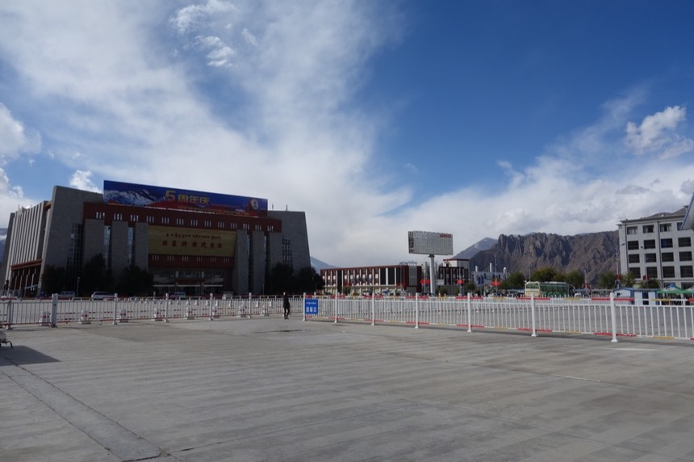
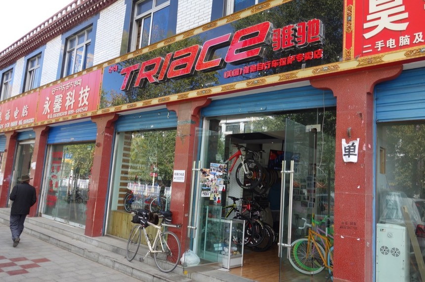
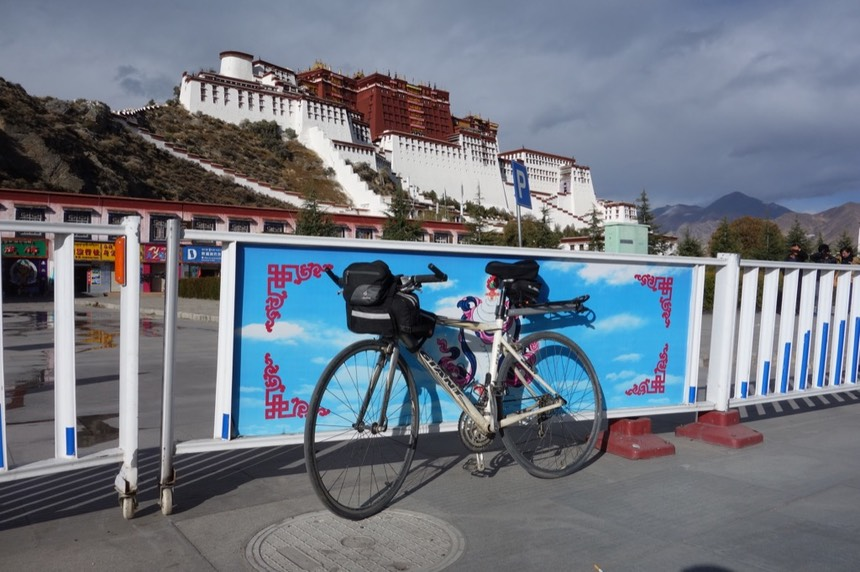
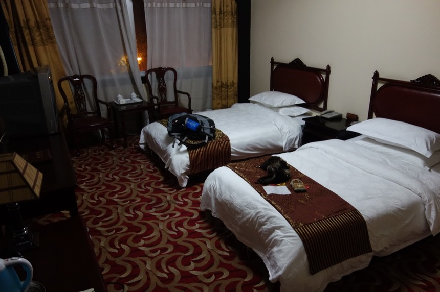

11/1 Day 12 拉薩
八點左右醒來，房裡凍得嚇人，蓋兩床棉被並沒有比較溫暖，整晚冷得難以入眠。
透過窗戶照進來的光，聽著兩位我連臉都看不清楚，但因緣計會共處一室的床友凝重的呼吸聲。
雖然那呼吸聲光是聽就讓人覺得不舒服，但至少表示睡了一晚，他們還活著。
天氣實在太冷了，沒暖爐的話，蓋再多棉被也沒用。別耗在這了，出發吧！
掀開棉被之後，能繼續穿在身上的也只有一件外套跟一雙鞋子，全數的暖暖包都已在昨晚用盡。僅剩餘溫。
為了杜絕自己在風雪中騎70公里單車到當雄的念頭（不論外頭是否出太陽）
一早就把後背包從貨架上卸了下來，背在身上。
工作手套很不幸的被餐館老闆順手帶走（昨夜老闆倒牛糞的時候，順手就把手套給拿走了...），夜裡太黑我沒發現。
走出冷冰冷的室內 外頭的景色和昨晚相彷，白色的山，白色的天空，然後飄著細細的小雪。
不用看氣象報告，就已經知道今天會下雪，看著白茫茫的天空，心情很差，不是個一天好的開始。
看著外頭飄揚的旗幟，今天是逆風，但不騎車所以什麼風都沒差。
背著許久沒背的背包，燒破了一個洞的部份用大塑膠袋從包包內部檔著。
兩瓶已經不知道結凍多久的保特瓶冰塊決定捨棄在此，不繼續攜帶了。
每天開始旅程之前，我都會自拍一張照片，想記錄這十幾天來臉的變化（才十幾天看著出變化嗎？）
這是睡眠不足＋寒冷徹骨＋臉部輕微凍傷的我。因為太冷，原本睡覺時才會帶著的瓜皮帽，我也不捨得拿下來。
站在馬路上，開始前途未卜的攔車計畫，這是離開古露，往拉薩的方向那個路口。
距離拉薩231公里，運氣好的話兩天就會到，但不想賭運氣了。我覺得這趟路老天已經給了我很多好運。
看著地上的積雪，想著等下如果在荒郊野外又被困住，這次要救我的好心人是誰？
看著卸下最重的背包，可是神情依然憔悴的小喵號。這輛車從2005年環法一來陪我至今超過八年。旅行之餘就是通勤之用。
如果小喵號擬人化的話，他的狀況不會比現在還躺在家庭旅館那兩位四川人來的樂觀，但卻被我硬拖出來到外頭吹風雪。
實在抱歉，可是無論如何，我還是得將你帶到拉薩，然後再用盡方法，將你帶回台灣。
看著車子朝著我駛來的方向，準備攔車到拉薩，風則從我的後面猛烈吹著，腳踝被風吹的凍的“好痛”。刺刺痛！
會痛其實我覺得還安心一點，表示至少還有知覺。原來凍傷是這樣的痛，像被針刺一樣。
這次旅行除了回憶之外還帶回了很多傷口，手指跟腳踝都有情況不等的凍傷。臉比較輕微真是萬幸。
我的手，連最後的長指工作手套也沒了，雖然我嫌棄它沒什麼用處，但現在看著手指裸露在外，還是很想念工作手套。
除了車輛經過我會把手伸出來攔車，其餘的時間，手都是放在口袋裡握著暖暖包取暖。
攔車目標主要有：
巴士，停車機率高，抵達城市的機率超高， 但車少。
以及巴士以外的其他車輛，包含小貨車、大卡車、箱型車，連中國郵政的卡車我都會伸手攔，可是幾乎不會有人停車。
等了一個多小時，其間還跑掉了一輛巴士...我沒看清楚巴士前面的牌子寫開往哪，但看到連巴士都不願意停下來，心很涼...
計畫攔到中午，（從早上九點開始）若沒車搭，我就去餐館跟老闆拿回我的工作手套，騎到當雄去。
才說不要騎車了，結果攔車經歷小小的失敗，馬上又動起了不如自己騎的念頭。大概是因為看到太陽的緣故吧。
有個帶小孫子上學的老伯伯走到旁邊跟我打招呼
「要攔車的話，不如往前走到檢查站那邊。因為每輛車在那都一定要停下來。」
因為那裡有公安，所以我很不想過去，但試試何妨？
牽著小喵號走過去，公安忙著檢查車輛和身分證，沒多理我。
剛好一輛小巴士開過來，停車受檢，擋風玻璃上面寫，「那曲 〉拉薩」
就是它了！無懈可擊的拉薩直達車！甚至不用到當雄再轉車！
司機下車去檢查站，跟公安核對證件，而公安則上車一一核對乘客的身分證，看的我有點緊張。
我不在車上，所以不用被檢查證件，可是如果我幸運地搭上了車，接下來的每一個檢查站，我都會變成被檢查的目標之一。
趁著司機受檢完的空擋，問司機能不能載上我？
司機問我去那？到拉薩的話80元，我後來拿100給司機說不用找了。
我真的不在乎古露到拉薩的行情價是多少，好不容易幸運攔到車子，又可以直接載著我到終點，區區80或是100又算得了什麼呢？
但司機還是堅持找我20，而且沒有收單車的拖運費。
附帶一提，司機是藏人。這個像是西部帽的打扮，也是常見的藏人行頭之一。
小喵號一如以往橫放在後車箱內，快到終點了～再支撐一下。
由於後車廂已經放了不少東西，所以得先拿出點什麼，把車放進去，再把拿出來的時候疊回車上。
上了駕駛座，不知為啥司機旁邊的位置沒有人坐，我就理所當然地坐在排頭，看著無遮蔽的風景。
心裡挺雀躍的，Go~Go~Go~往拉薩前進吧！
從古露海拔4700，到拉薩海拔3600，一路上大致是下坡，所以這段231公里的路，跳過沒騎我並不會感到太遺憾。
雖然是為了安全考量，所以沒騎車上路，但其實一離開古露卻發現，今天天氣還不差！（那我早上在那邊吹風受凍是什麼意思？）
按耐著自己別又半路想要跳下巴士騎車的念頭，有個東西可以讓我很分神，就是一路上很多（真的很多）公安檢查站。

而經過檢查站一定要停車受檢，公安會上車查看乘客身分證，我坐在司機旁邊，假裝淡定。
每個乘客都拿出證件等待受檢。我假裝自己是貨物動也不動的看著前面發呆，直到被公安拍肩膀，我只好拿出台胞證...
果然立刻就被叫下車！司機也一臉狐疑的看著我。我故作鎮定的跟司機說等我一下，車子別開走了！
被公安帶去很嚴肅的室內，要是用電腦連線一查我沒有入藏證的話就完了。

結果只是拿出一個小紙本記錄而已，看到拿出來的是掛在牆壁上的紙本，心就安了。
寫記錄本時用的筆還是我自備的，只能說是虛驚一場。並不是太專業的檢查，回到車上，司機問我說
「你不是漢人嗎？為什麼要登記？」我才知道原來公安檢查的重心大致上是放在遷徙的藏人身上。
這趟車的乘客真的不多，奚奚落落整輛車載不到10個人，別以為用外觀分辨藏民是很容易的事。
當然有很明顯的藏民，可是依照在拉薩生活的人給我的回答，也有很時尚的藏民，膚色、外觀、打扮跟漢人無益。
接下來陸續又經過好幾個檢查站，檢查的嚴格程度非常不一。
有的只要司機下車去受檢即可，公安並不會上車查乘客。
有的即使公安上車查證件，也不會理會我，只把目標鎖定在藏民。驚悚的拍肩膀只發生過一次，接著就沒事了。
就這麼依續通過當雄、羊八井，直直往拉薩走。
看著熟悉的雪白景色逐漸退去，路旁不再有積雪，得抬頭看著山頂才能瞥見。
我跳過的最後這一段路，大致上就是像這樣的景色，所以我才覺得沒什麼好遺憾的，只差沒自己騎到終點而已。
手錶上的海拔計一直降低，從所在的古露4700，一路像溜滑梯般降到3600。
不再會因為少吸一口氣，而整個人喘起來，有時候看著窗外的風景出神了，才會想到剛才忘了呼吸，但已經無礙。
一開始很認真想要數經過幾個檢查站，數到後來我就放棄了，除了城市一定會有，路上隨時也會蹦出一個又一個的臨時檢查站。
看著窗外這麼好的天氣，我卻坐在巴士內。最艱苦的雪山都爬過了，零下10度都在單車踏板上踩踏過。
現在這段風和日麗的下坡路，輕鬆一點待在車內無妨。

過了羊八井是很蜿蜒的下坡山路，轉來轉去的，伴隨著馬路的是一條溪水湍急的河，一路流到拉薩。
路標已經38XX了，表示其實已經算是進入拉薩的範圍，只是不知道身在何處而已。
進入拉薩郊區後沒多久，有乘客下車。
由於小喵號壓在他們的行李上，所以我就跟著下車把小喵號搬出來，既然都搬出來了，就想說不然從這邊騎一小段路進拉薩好了。
不知道這裡是哪？但騎了再說吧，背包則就繼續背在身上，背著包包騎車感覺很有趣（但時間一長應該就不會覺得有趣了）
好消息～結凍好幾天的前變速器終於也恢復正常了！小喵號身上的結冰全數溶解，齒輪也都可以正常使用了！
拉薩的天氣只能用風和日麗來形容呀～久違的甚至會感到有一點“熱”。
第一件事，先找東西吃，肚子頗餓，已經過了中午，起床至今只吃了幾片營養口糧，隨意挑一間飯館用餐。
由於非用餐時間。老闆自己正在吃飯，只要有客人點菜，他的用餐就會被中斷。
沒看到菜單有背面，不然就會點想吃好久的炒飯（價錢也便宜），從菜單正面點了一份紅燒排骨。
但整盤都是馬鈴薯....
可惡，失策的點菜！吃完飯開始搞正事，主要有兩件，一：買火車票。二：找紙箱分解小喵號。
在那曲的時候聽一位床友說「入冬時，下山的火車票供不應求，供需非常緊張。」
趕緊的在11月的第一天，去看看還有沒有票可以載我回蘭州。
不用多說，拉薩很大，大建築也很多。火車站在新興的郊區，找火車站就花了一點時間。
要過一座柳悟大橋，對面的新興開發區域貌似就叫柳悟區。
找到龐大看起來很威武的火車站之後，要找入口進去又花了一點時間，我繞了火車站週邊一圈，又一圈，就是找不到入口。
整個碩大的車站前廣場除了公安之外，沒有人（禁止進入），看起來有種格外詭譎的氛圍。
看著正門在那，但整個火車站都被護欄包圍起來，護欄內只有大約每50公尺就有2~3人一組的公安在站哨。
繞來又繞去覺得這樣下去不是辦法，連車站都進不去，我要怎麼買票呢？問了公安才知道側邊有一個管制人員進出的出入口。

一圈又一圈的欄杆，我真的找不到入口，直到開口問了公安。
買票要緊！單車居然不能牽進去，也罷～就停門口讓公安幫忙看著吧。
其他時候要是有人跟我說「車放這，沒事的，不會掉的。」我還是很不安心，但這邊公安之多，我把車上了鎖之後就安心的去買票了。
進去「買票」而已就很嚴肅，行李（我的後背包跟腰包還有外套都算是行李）要過X光機，
人身也要過金屬檢測器後由人員再搜索一次，非常嚴肅 =.=
由於已經是下午，沒有發車的車輛了，這時候會進來火車站的只有要買票的人，檢查相對沒那麼嚴格。
總算進入了火車站本體，只開放了最小限度的空間做為售票處。
大大的LED看版寫著每日的火車班次「剩餘的車位」，其實票還挺多的。
由於蘭州是開往其他城市（上海、廣州、成屋等）的必經之處，所以幾乎每一輛車我都可以搭。
我買的是T266車次（再早的車已經沒位子），硬座剩下24個，臥鋪顯示都是0，
但我已經打定主意要搭硬座回去，所以臥鋪座位有無就與我無關了。
發車時間是不早不晚的12：08（六），抵達蘭州已經是13：21（日），總計25小時。
硬座，票價240元，硬臥（六人一間）則是522元起跳，和最高級軟臥（四人一間）是823元起跳。
票價差異很大，硬座雖然便宜，但屁股要忍受25小時多的“硬坐”， 不會是件容易的事。
買車票挺簡單，說出想要去的地點和時間，售票員就會跟你說班次和價錢。
購票要出示證件，拿出台胞證就ok，不會多嘮叨什麼，也不會要求看入藏紙（這東西真是神奇，我擔心的要命，但似乎沒人在意）。
附帶一提，車票是實名制度，底下的小數字是我的台胞證號碼，查看車票時要連同台胞證一起出示才能搭車。
火車票搞定，問題就解決一半了， 剩下的一半是小喵號的分解裝箱。
騎單車回市區尋找單車店，出發前研究過北京東路上很多車店，但我在另一條大馬路的路邊就先發現車店。

沒有舊紙箱可以拿，但是買全新的紙箱包含專業的單車分解，收80元。
有點貴，因為拿免費舊紙箱我自己分解單車的話，費用是0元，但算是可以接受的價位。
時間還早，而且車子拆了，我就連唯一的交通工具都沒了，所以我先去市區繞繞，等會再回店裡拆車子。
另外，即使你很興奮的跟別人說你騎著青藏公路到拉薩來，真・的・不・會・有・人・在・乎。
這事情只對你自己有意義而已，對於在拉薩生活的人來講，看到騎單車來的人，是在普通不過的事了。
在市區亂繞，想看看布達拉宮的威嚴的樣子。發現實際的拉薩跟我想像中的拉薩，落差好大。
在市區騎車閒晃讓我對拉薩的印象很破滅，就是一個現代化至極的大城市，一點也不西藏。
整齊劃一的藏式風格建築，外加統一的招牌，看得出來規劃得很好，但就是覺得哪邊怪怪的...
路上很多載客的單車，後來得知他們都是藏民，因為沒有謀生的能力，所以就騎人力車載客。
這造成了已經很堵塞的交通更加混亂，但卻無法管制，因為一旦禁止了人力車，那這些人就會失業，演變成另外的問題。
比較熱鬧的觀光路段有規劃成行人專用（自行車還是可以騎）
其實我也不知道我心中幻想的拉薩是什麼樣子，但看到實際的拉薩，總是覺得哪邊怪怪的。不夠...宗教性嗎？
我不知道拉薩的市區多久以前開始整頓，市容很乾淨漂亮，柏油路平整的程度令人折服。隨處都有垃圾桶，鮮少看到地上有髒亂。
亂繞亂繞終於給我騎到傳說中的布達拉宮，我幻想中他是在很高很高的雪山頂這樣。
但其實從市區的觀點來看，他比較像是在一個小丘上頭。
進去要門票，所以就門口看看即可，本來想騎單車進去繞一圈，但是入口處都有安檢關卡，且禁止單車進入。
雖說如此，我還是看到有人在裡頭騎單車，不知道他們怎麼溜進去的？

這次旅行的終點在這，由小喵號完成～雖然搭車的距離大於騎車的里程，但還是有不枉此行的感覺。青藏高原好棒！
和拉薩火車站一樣，布達拉宮也被鐵籬笆圍了一圈，唯獨戒備的程度不太一樣，稍微讓人感到輕鬆愉快些。
公安比較集中在各個出入口，加上遊客的數量較多，比較有人味一點。
在市區繞的同時，研究了市區的住宿費用，完全高到一個不合理的極致！
都是以外國觀光客的水準在訂價，我找到最便宜是破破爛爛旅館，開價還是嚇死人的480元。
有經過一個頗有名的青年旅館，可惜沒去問價錢（在馬路對面），經由住過的人描述，裡面是大通鋪，價位大概是30~50元左右。
找旅館碰了一鼻子灰，當場決定等單車裝箱了，就搭計程車（公車也能到其實）去火車站（郊區）住價錢相對便宜的招待所。
回到車店，看著專業的手法分解單車另人讚歎。
沒兩三下就被漂亮的分解完畢，連難拆到不行的踏板也是一下就卸下了。
小喵號一路上辛苦了～現在你可以好好休息幾天，等回台灣後我再把你洗乾淨後組合起來。
速度之快，封箱的時候很多想放進紙箱的東西都來不及放...只能繼續背在身上。
我問了哪邊可以搭公車去火車站，店員和客人都說搭計程車吧，帶著大紙箱公車也許不給載，計程車用喊價的，30元就可以到車站。
在路邊攔了計程車，小喵號非常勉強才卡進後車廂，凸了一大截在外頭，還得靠後背包卡著才不會掉下去。
閒聊發現，在拉薩開計程車真不簡單，為了上路做生意，一個月要交給政府的權利金就高達一萬人民幣...
所以多個司機輪班開同一輛車是很普遍的行為，我正好遇到交班的時間，車上有兩位司機。
到了火車站旁邊唯一的招待所區域，開價100雖然小貴，但跟市區的無理高價相比實在超便宜！
可惜事情沒有那麼順利，最後一晚的住宿踢到了鐵板。
住宿時一如以往又要填寫資料看證件，我拿出台胞證的時候，對方很無奈的說台灣人不能住這，
萬一晚上公安查房查到了，招待所會被關店處分的。
一路上聽過太多次「台灣人不能住這」我都笑笑的說沒關係啦～我一早就走了，不給你添麻煩。
但這次真的不行，因為拉薩的公安實在太多，規定也很嚴格，跟我一路上住過來的地方無法相比。
對方請我去公安局公跟公安通報一聲，說我車票都買好了，明天中午的車，能不能請公安通融讓我在這邊住一晚。
對我來說，這樣的行為就叫自投籮網，沒事我好好的去找公安做什麼呢？但為了能住宿，我還是硬著頭皮去了。
過程的艱辛就跳過不談（奔波了兩個地方，後來連旅館的老闆娘也要一起跟我過去被公安責念）結論就是不能住！
由於單車已經裝箱帶到離火車站僅僅50公尺距離的地方，我實在無法接受再把單車帶回市區。
接下來的發展是，小喵號花50元的費用寄放在招待所，金額我自己開的，也許高了一點，但我就是這麼重視它。
另外也很抱歉害到老闆娘，要跟著我一起被公安叫去罵，然後再走老遠的路回招待所。
我發現當時居然沒有拍任何一張關於公安或是公安局的照片。因為到處都是公安呀！
光是拿出相機對著公安局拍照的這個舉動，都覺得會給自己帶來麻煩！
經過老闆娘的協調，我搭另一輛車（不是計程車）獨自回到市區，住老闆娘用關係喬到的低價旅館。
等我重新回到市區時，天色都已經黑了，可見我剛剛在公安那邊被磨損了多少時間。
旅館原價680的雙人房，僅用200元的代價就入住，我知道200還是貴，但真的沒有別的辦法了。
另外也對旅館的定價感到有點生氣，一樣的房間，散客自己入住，跟透過關係入住的價錢竟然差那麼多！
看看旅館的標價，這樣的價錢你能接受嗎？去掉一個零才是我覺得合理的價錢。
房間內長這樣，是貨真價實的旅館，但我真心不想花錢住旅館。

想到我跟公安說，如果招待所不能住的話，我可以在路邊坐一整晚到天亮嗎？
我真的有打算這麼做，但問出口的結果，就是直接的惹惱了對方「跟你說招待所不能住，你跟我說要睡路邊！？」
一個晚上定價680元的房間內理所當然的有衛浴，這是我出發至今，洗過的第一場澡。而今天是旅行的第12天。
過去這幾天都是用擦澡的方式，甚至連擦澡也不行時，就泡泡腳。
連泡泡腳的熱水都沒有時，就僅僅用濕紙巾擦過臉就當洗澡完畢。
昨天晚上在古露，還試圖在燃燒衛生紙點燃牛糞取暖，深怕把自己搞到一氧化碳中毒。
現在空調一開就有30度的暖氣可以吹，附帶一提，昨天睡覺室溫大約零下兩度。
有一種湯姆漢克在浩劫重生電影中，回到文明社會時的不適應。
但我知道這些過去看似理所當然的生活，現在雖然看起來很奢侈，
但沒多久時間，又會重新被我視為理所當然，生活中日常的一部份。
今天過夜最大的差異，是小喵號沒有跟我睡在一起，是這麼多天以來的第一次，只有我自己一個人睡覺。
房間裡只有少少的行李，讓諾大的房間更顯空蕩，短短的小旅行就這麼結束了，一人一車都受了點傷，也得到金錢買不到的回憶。
騎車累的時候，我就會握緊把手說「呼口號！」
「喵喵喵∼喵喵喵∼」隨便叫個幾聲，讓自己喘氣到不行，然後大口吸氣，打起精神繼續前進。
放眼望去都是雪白一片的旅行已經結束了。
現在距離回家只剩下一個未知數，打包裝箱的小喵號，我知道上飛機沒問題，但上火車行嗎？
行李的攜帶量和買硬座跟軟臥會有差異嗎？有沒有最大行李尺寸的限制？萬一單車不能帶上火車怎麼辦？
下午買票時，售票員提醒要提早一小時到站，拉薩是發車站，我想早早去車站研究單車運送的問題，那就提早個兩小時去好了。
晚餐在附近隨便買了些東西吃，感覺是不是有宵禁？晚上有開的店好少好少。
一個人走在頗漆黑的路上並不會感到恐怖，因為到處都是公安的哨點，從觀光客的觀點來看，這點倒是提供了安全的保證。
明明路上的行人（遊客）還那麼多，但是全部的店家鐵門都拉了下來。
晚餐吃炸串，物價真的漲！以前一串一塊或是五毛，現在都不止了！
這種中國式鹽酥雞吃起來絕・對・不・健・康，但味道很有趣。（好不好吃因人而異）
真心建議沒事不要多吃，因為那個油好恐怖的 XD 但看到還是會想買就是...
另外看到罕見還有在營業的商家，就去買了一瓶水，這是旅行中首度花錢買水喝。
水都能用錢買了，旅行的克難性好像逐漸消去，同時今天花了好多好多的錢，火車票、旅館、計程車，一時之間對於錢的概念都混亂了。
除了超級不健康的炸串之外，還買了烤雞腿跟超級迷你小橘子。
再知道他是橘子之前，只是好奇問一下這是啥水果？知道是橘子之後，就毫不猶豫的買了一斤。
沒有比例尺看不出這是多迷你的橘子，就用我的手來當一下對照。
好可愛的橘子～一口可以吃掉一個，可是我還是會一瓣一瓣的剝著吃。
房裡開著暖氣，溫度絕對比昨天還要溫暖，沒來由的卻依然覺得冷，洗了久違的熱水澡，卸下髒污之後，全身的痠痛居然都冒了出來。
人真是一懈怠，病痛什麼的都會跑出來。快要回家了，下一站是25小時的火車硬座之旅。
今日花費
80 小巴士 古露-》拉薩 我真的不在乎行情價是多少了
30 午餐 紅燒排骨（都是馬鈴薯）
2 白飯一碗
240 青藏鐵路 12：08 分 拉薩-》蘭州 硬座 行車時間24小時
80 小喵號專業分解、裝箱
40 計程車 市區到火車站+紙箱放後車廂（很勉強）
50 小喵號寄放在招待所，貴，我願意付。
200 第一次住到能洗澡的旅館 原價680 感謝好心人安排
30 火車站到飯店門口的車資
18 八串炸串
6 一斤超迷你橘子
12 兩隻烤雞腿
5 1.5公升裝農家水
----
793
今日騎乘
騎乘時間 02：16：45
距離 34.1km
平均速度 15.2km
路線圖 (Google Map 連結)